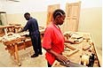

国际劳工组织工作安全局（SafeWork）

国际劳工组织职业安全健康与环境局（简称工作安全局）是国际劳工组织社会保护部门下属的一个单位，主要致力于改善全球工作条件和工作环境。通过工作中的安全与卫生，完善社会保障并提高生产率。其工作领域涉及：国家职业安全健康体制及规划、职业安全健康管理体系、职业健康、化工安全与环境、危险作业、辐射防护、工作场所健康促进与快乐、职业安全健康监察、职业安全健康经济方面等。
为在全世界范围内解决职业安全和卫生问题，国际劳工组织于1999年建立了职业安全卫生重点工作计划（SafeWork），旨在制定预防性政策和计划，从而保护工人的安全和健康，特别是在采矿、化学品的使用、建筑和农业等危险职业和部门。
工作目标
职业安全卫生重点工作计划有四个主要目标：
1. 制定相应的预防政策和方案，保证职工在危险职业和行业中的人身安全；
2. 将有效地预防措施延伸到传统保护措施范围以外的弱势工人群体中；
3. 政府、雇主和工人组织能够更好地致力于工人的福利，促进职业健康的完善和工作环境质量的提高；
4. 政策制定者能够认识到并明文规定社会和经济发展对提高工人保护措施的影响。
工作策略
职业安全卫生重点工作计划旨在加强全球对工伤事故、伤害和疾病的范围和影响的认识；使工人的安全和健康提上国际议程；促进和支持各项工作。考虑到这一点，该计划应加强进行突破性研究、统计工作和媒体宣传活动，将通过全球的技术援助来扶持国家级行动。由于灾难给人类带来的痛苦和社会代价的惨重，同时，安全保护措施能够带来潜在的效益，如提高生产率，提高质量，节约成本等，将会越来越受到重视。职业安全卫生重点工作计划是一项政策和可操作的工具，是成本低，效益好的首要预防性方法，从而保护所有工人的安全与健康。
欲想了解详情，请点击：http://www.ilo.org/safework/lang--en/index.htm
相关链接：